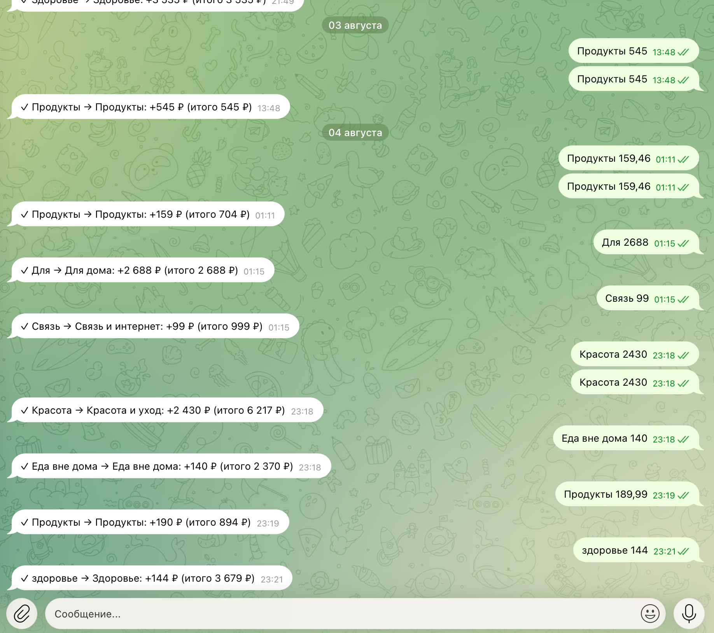
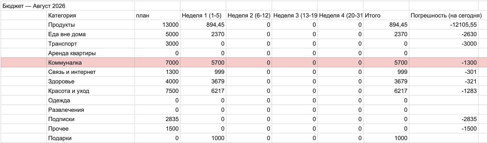
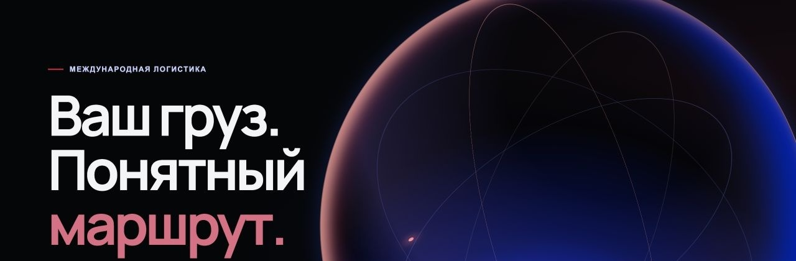

Реклама под контролем
Telegram-бот собирает показатели рекламы: расходы, обращения и стоимость обращения. Можно выбрать период и посмотреть результаты без ожидания очередного отчета.
Боты и инструменты, которые помогают видеть показатели, работать с клиентами и освобождать время от рутинных задач.
Telegram-бот собирает показатели рекламы: расходы, обращения и стоимость обращения. Можно выбрать период и посмотреть результаты без ожидания очередного отчета.
Дашборд стоматологии объединяет показатели рекламы и продаж, чтобы руководитель мог видеть картину в одном месте.
Демонстрация на вымышленных данных.
Открыть дашборд ↗Учет расходов через Telegram: данные сохраняются в таблице, чтобы их было удобно смотреть и анализировать.


Бот помогает записывать задачи и напоминания голосом: надиктуйте, проверьте распознанный текст и сохраните.
В разработке
Сайт для логистической компании. Продумала путь пользователя от знакомства с услугами до запроса расчета, оптимизировала графику и анимацию для загрузки.
Планируется панель, в которой клиент сможет самостоятельно редактировать страницы сайта.
Под капотом:

Повторные обращения важны для долгосрочной ценности клиента. Но клиент мог остаться в базе клиники и не попасть в задачу оператору: без сверки его легко пропустить в дальнейшей работе.
Я автоматизировала сверку выгрузки клиентов YClients с задачами в WAHELP. Программа сопоставляет данные по номеру телефона и формирует список клиентов, по которым не найдена задача. Команда может проверить список и распределить клиентов для дальнейшей работы.
Результат одного рабочего прогона. Найденных клиентов нужно проверить перед касанием; прирост выручки отдельно не измерялся.